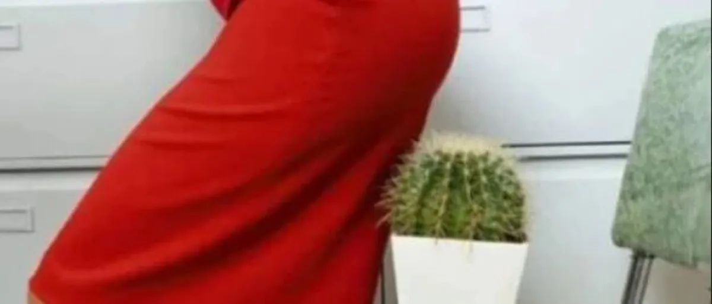
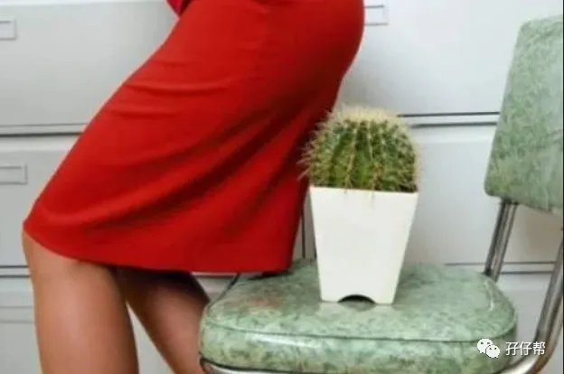

点击上方蓝字 ，与您分享双胞胎育儿经！
本文来源网络，版权归原作者所有，如有侵权请联系删除。
Hi：各位双胎妈妈
今天圆圈妈要说一个比孕期便秘还要尴尬的问题
痔疮
孖仔帮孕期群常有宝妈哭诉孕期痔疮发作的痛苦！
我感受不到，也脑补不了！
庆幸我没有这个困扰
因为怀孕腹压的关系。
孕妇有痔疮真的是很常见的问题，
十位孕妇至少七到八人有不同程度的痔疮，
怀孕期间若便秘引发痔疮疼痛怎么办？
请看下文
分享给深受痔疮的困扰而难以启齿的准妈妈！
01
孕期中的治疗以保守性治疗为主，护理方式和饮食也是很重要的。
1、严重的痔疮给予止痛药
针对状况严重的痔疮，医师会给予止痛药、软便剂、消肿软膏等来缓解孕妈咪不舒服的情况。
通常急性的疼痛会在吃了止痛药2、3天内缓解，但肿胀的痔疮则需擦消肿药膏约两周才会逐渐变小。
2、试着做扩张按摩
在擦药膏时顺便用手指在肛门做扩张按摩，有助于促进肛门周遭的血液循环，增进血液回流开些，让肛门不要太紧缩
方法：涂抹药膏时，用一根手指头将肛门撑开些，让肛门不要太紧缩，一天可做两三次，肿胀会较容易缓解。
3、温水坐浴法
温水坐浴则是另一种治疗方式，温水坐浴可以帮助肛门周遭的血液循环，能舒缓痔疮的不适。
实施的方法为在盆中注入38～41度像是温泉温度的热水，坐在热水盆中约10～15分钟，如果时间充足一天可多做几次。
02
痔疮不要来，预防胜于治疗
痔疮的产生其实与生活作息、饮食习惯习习相关，以下预防痔疮的方法供孕妈咪参考：
1、正确的排便方式与姿势
坐在马桶上不断的用力是错误的排便方式，想一次将所有粪便排出或当粪便排出后无提肛收缩肛门括约肌之动作。
例如经常习惯于坐在马桶上阅讀报章杂志，就是犯了这种毛病，疏乎了正常的提肛反射。不
正确的排便方式除了会导致痔疮外，亦会促使骨盆腔下降造成女性直肠膨出，以及阴部神经拉伤。
当有便意时坐到马桶上，顺势用力将粪便排出，然后立即提肛收缩肛门，接着放松等待下一波的便意，如此重复上述动作，直到将所有粪便排净随即離开不可久坐马桶。
2、多吃膳食纤维
膳食纤维对人体的循环健康很重要但是常被忽略，尤其是外食族经常摄取不足，缺乏膳食纤维容易便秘。
蔬菜水果在每日摄取的食物中量要占多数，成人女性每日要五至七蔬果才够。
建议多吃新鲜未加工的水果，才能充分摄取到水果中的果肉纤维；另外，深色蔬菜是不能少的，可以选择天然的食物，像是，黑枣精华露、酸奶、优格、木瓜、香蕉、糙米、燕麦等纤维质很高可以帮助肠胃蠕动也可多吃。
除了要多吃蔬果之外也要多喝水，水分可以促进食物消化和吸收作用及维持正常循环与排泄作用，一天约要补充6至8大杯的水分才足够。
3、饮食清淡少吃辛辣食物
辣椒、胡椒、芥末等辛香料对肛门产生过度刺激造成充血、增加痔疮形成的机会。
建议在孕期饮食以清淡为宜，尽量避免食用辛辣或是重口味食物，也可减少痔疮的发生率。
当痔疮肿胀时，大便经过肛门时就会磨擦痔疮造成破皮而流血，尤其在吃了刺激性食物或熬夜后会加重症状。
4、补充充足的水分、养成规律的排便习惯
首先要补充足够的水分，养成规律的排便习惯，一有便意就要赶快去如厕，因为不赶快去如厕便意一消失就会增加排便的困难。
此外，排便时要专心排便，别边滑手机或看杂志边上厕所，因为坐在马桶上时是让肛门括约肌长时间处于施压的状态，肛门容易因压力充血，坐得愈久充血的状况会愈严重，容易形成痔疮。
若排便不顺可以先起来动一动，等有较强的便意再去排便。
5、排便后用温水冲洗屁股
已经出现痔疮的孕妈咪在排便后可用温水冲洗屁股后再用毛巾拍干，这样的方式会比用用卫生纸直接擦拭佳。
因为痔疮不但会影响擦拭的清洁度，也容易在擦拭过程中将痔疮擦破造成流血；冲洗肛门可以减少肛门摩擦的机会。
此外，在洗澡时也可以用温水冲洗肛门，可顺便按摩肛门附近的血管，促进血液循环，减少痔疮发生机率。
6、适当运动
孕妇应适当运动，不能长久坐着，以促进肛门直肠部位的血液回流。加强肛门锻炼，主动收缩肛门，放松后再收缩，连续3次，每日3-7次。
如出现痔疮肿痛、出血较多等情况时，应及时就诊治疗。
7、避免长时间久坐、久站
孕妈咪不论是长时间维持坐姿或是站姿，都容易增加痔疮生成或是压迫痔疮，所以每坐一两个小时就要起身活动走动一下，或是每站一两个小时就要坐着休息一下，减少肛门压迫的机会。
8、生活作息规律、正常
规律的生活作息可减少精神、身体的压力，没有压力负担身体的机能就能顺畅运作。
熬夜这种不规律的生活型态或是工作上过大的压力也有可能引起便秘进而引发痔疮，所以孕妈咪要好好调养身心，养成规律作息的习惯。
9、体重不要增加太多
因为体重愈重，所有重量都会压至骨盆腔而造成肛门静脉曲张恶化。
03
若便秘引发痔疮疼痛怎么办？
孕妇发生痔疮是常见的问题，可以请教妇产科医师该如何处理，必要时可由妇产科医师转介至直肠外科接受检查及治疗。
孕妇在孕期使用任何药物时都要详细阅读说明，必要时咨询医生，切不可以为只有口服药对孕妇有禁忌。
痔疮有可能反复发作，所以提醒准妈妈除了孕期要注意之外，产后也很容易因为饮食不均衡或缺乏运动再度引发。
想要避免痔疮再度找上门，随时都要关心自己的生活状况，彻底执行预防守则。
END
网站来源：
https://nurse4baby.blogspot.com/2018/05/blog-post_8.html
关于这个号
谢谢关注！我是圆圈妈
85后，全职双胎妈妈
家有孖仔男宝两枚，圆圈&圈圈
双胞胎育儿公众号：孖仔帮
旨意分享双胞胎育儿经验帮助双胞胎家庭
有经验可循
有组织可靠
希望我的经验对您有所启发
期待与您一起共享双胞胎育儿经
孖仔帮目前有4个微信社群
孕期群，喂养群，闲置群，双胞胎爸爸专属群，
如需入交流群，请+圆圈妈的微信号sgguy-com,或扫描下方二维码
由圆圈妈邀请入群
更多孖仔帮双胞胎原创育儿文章请猛戳 "阅读原文" 或者直接上圆圈妈的个人博客。
博客链接：https://www.sgguy.com/twinsbang


